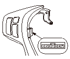

オーディオ リモート スイッチの点検
SRSエアバッグ システムに記載されている作業上の注意を参照し、作業を進めること。
ステアリング ホイールを取外す。
オーディオ リモート スイッチを取外す。
各ポジションでNo.5端子とNo.7端子間の抵抗を測定する。
ポジション
抵抗値
OFF
約10kΩ
MODE
約3.7kΩ
CH（＋）
約1.7kΩ
CH（－）
約775Ω
▲
（Vol.UP）
約357Ω
▼
（Vol.DOWN）
約100Ω
基準値から外れている場合は、
オーディオ リモート スイッチを交換する。

 SRSエアバッグ システムに記載されている作業上の注意を参照し、作業を進めること。
SRSエアバッグ システムに記載されている作業上の注意を参照し、作業を進めること。
SRSエアバッグ システムに記載されている作業上の注意を参照し、作業を進めること。
SRSエアバッグ システムに記載されている作業上の注意を参照し、作業を進めること。